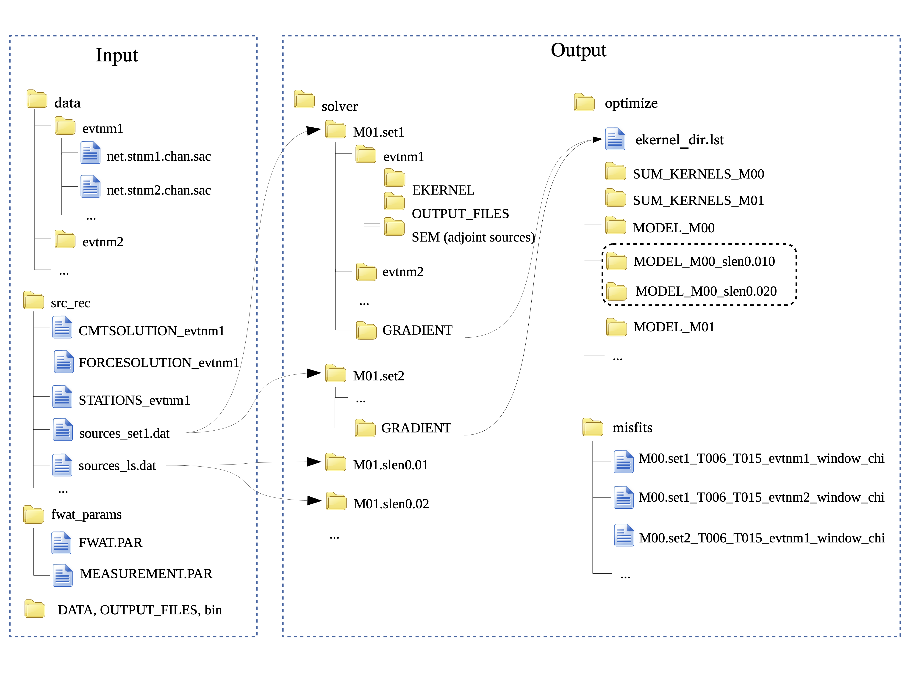

Package structure
The FWAT package consists of some workflow-control bash scripts and programs in several folder. The structure of FWAT is summarized in Figure 2.
{kind=link}

Figure 2. Structure of FWAT.
Inputs
data contains sub-directories of seismic waveforms stored by event names. All the data are in SAC format and named as ./data/evtnm/net.sta.chan.sac, where evtnm and net are event and network names, sta is station, chan is the channel. For example, ./data/CI.STC_Z/CI.BAK.BXZ.sac is the EGF between a vertical virtual source CI.STC and a general station CI.BAK for vertical components. ./data/P1/TO.CC01.BXZ.sac is the vertical component waveform recorded by station TO.CC01 from a teleseismic event named P1.
Note
CCFs requires sac headers: knetwk kstnm kcmpnm dist az baz stlo stla evlo evla. Remember to remove zero/NaN traces because it will cause errors when applying normalization to CCFs.
Use the script rewrite_sac_header.bash to rewrite sac headers and remove zero/NaN traces.
src_rec stores all source and station information needed for the inversion. There are generally three types of files prepared for the SPECFEM3D Cartesian, namely CMTSOLUTION_evtnm, FORCESOLUTION_evtnm, and STATIONS_evtnm. The format of these files should be the same as described in the user manual of SPECFEM3D Cartesian. The other two files called by FWAT are sources_set?.dat+ and sources_ls.dat. sources_set?.dat is the name list of events (or virtual sources), which are used for making directories for simulations by event name. We can divide the events into different sets, such as set1, set2, …, etc. sources_ls.dat contains the event names for line searches. The format of this two source list is:
event name | latitude | lon | elevation | bury depth
BK.KCC_Z 37.323600 -119.318700 888.000000 0.0
BK.PACP_Z 37.008000 -121.287000 844.000000 0.0
BK.PKD_Z 35.945200 -120.541600 583.000000 0.0
CI.ARV_Z 35.126900 -118.830100 258.000000 0.0
CI.BAK_Z 35.344400 -119.104400 116.000000 0.0
CI.CAR_Z 35.308200 -119.845800 765.000000 0.0
DATA, OUTPUT_FILES, bin. These three inputs are essential for launching numerical simulations for SPECFEM3D Cartesian. Please refer to the user manual of SPECFEM3D Cartesian for the details.
fwat_params contains input parameters for FWAT. There are two files including FWAT.PAR and MEASUREMENT.PAR.
Outputs
misfits stores all the misfits files for a specific model. For example, all misfits of event set1 for model M01 are stored as ./misfits/M01.set1_T006_T015_evtnm1_window_chi.
optimize is where postprocessing procedure applied. All event kernels are processed in the directories SUM_KERNELS_M??, and model updating files are stored in MODEL_M??.
solver is where numerical simulations are performed and stored. For evtnm1 in the source list set1, the forward simulation root directory is ./solver/M01.set1/evtnm1. For line search at step length of 0.010, the corresponding directory is ./solver/M01.slen0.010/evtnm1.
Driven scripts
submit_job_fwat1.sh is the driven script for running forward and adjoint simulations in Stage I. This script will call the PBS script pbs_fwat1_fwd_measure_adj.sh or SLURM script sbash_fwat1_fwd_measure_adj.sh and the results are stored in the directories solver and misfit.
submit_job_fwat2.sh is the driven script to perform postprocessing of kernels and optimization for model update in Stage II. It will call the PBS script pbs_fwat2_postproc_opt.sh or SLURM script sbash_fwat2_postproc_opt.sh and the results are stored in the directories optimize.
submit_job_fwat3.sh is the driven script to do forward simulations for a linear search in Stage III. This script will call the PBS script pbs_fwat3_linesearch.sh or SLURM script sbash_fwat1_linesearch.sh and the results are stored in the directories solver and misfits.
Plot scripts
plots contains some example scripts for plotting misfit, model, kernel, waveform.